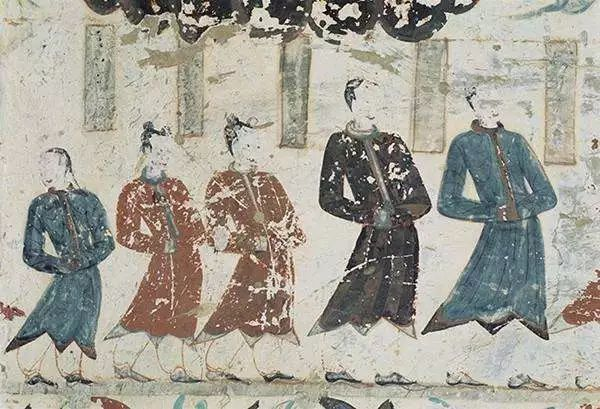
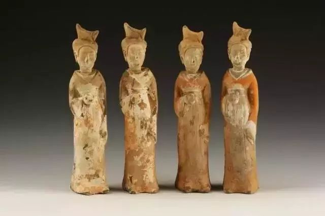
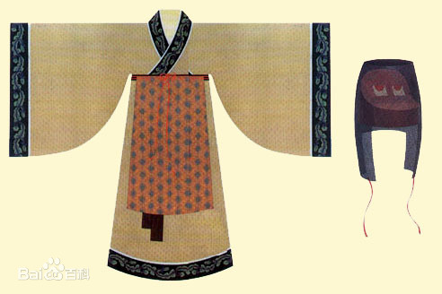
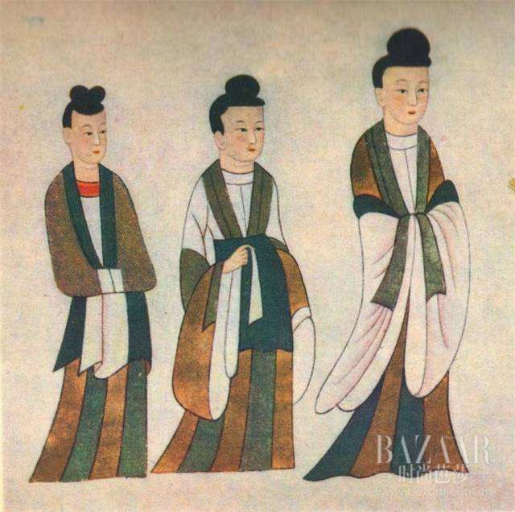

公元471年，年仅4岁的孝文帝元宏即北魏帝位，当由祖母冯太后临朝执政，并尊冯太后为太皇太后。冯太后尽管在生活上放荡不堪， 但却是一位颇有才能的政治家。在她的主持下，北魏进行了一系列重大改革，缓和了阶级矛盾， 限制了地方豪强势力，扭转了北魏国力衰微的局面。冯太后死后，孝文帝把北魏的改革推向了更高的阶段，使衰弱的北魏逐渐强盛起来。
孝文帝下令，鲜卑族一律改穿汉人服装，孝文帝亲自在光极堂给群臣颁赐了汉服的“冠服”，让他们穿戴。随着迁都的进行， 大批鲜卑人源源不断地涌入内地，北魏政府又面临着许多新问题：鲜卑人的习俗是编发左衽，男子穿袴褶，女子衣夹领小袖， 多数人不会说汉语，这些都不符合中原的习俗；且新迁之民初来洛阳，居无一椽之室，食无担石之储，不擅农业，人心恋旧。 如不及时解决这些问题，将会严重地阻碍各民族之间的交往和经济文化的发展，不利于北魏政权的巩固。 在王肃、李冲、李彪、高闾等汉族士人的支持下，迁洛之后，孝文帝立即着手改革鲜卑旧俗，全面推行汉化。
鲜卑人服装的主要特点是短衣窄袖，便于骑马射箭，穿长靴便于在草原上行走。平城时代，鲜卑人还可以经常在草原驰骋， 胡服当然更适合一些。北魏的鲜卑服饰男性一般头戴鲜卑帽，内著圆领衣，外罩交领窄袖大袍或左衽衣，领、袖及下摆皆有缘， 特别是下摆的缘较宽，似镶皮毛之边，腰束宽带，下着小口裤，脚蹬靴。鲜卑帽，又称突骑帽、帷帽。其最显著的特征是圆帽、 垂裙。迁都洛阳以后，生活环境变了，胡服自然也就派不上用场了。
 
女性鲜卑服样式主要有三种样式，第一种为内著圆领内衣，外著交领、窄袖左衽衣，衣长至膝下，领、袖、门襟皆有缘，下摆镶宽边（ 也有可能镶皮毛宽边），左衽衣基本上呈直筒形，下饰间色裙（裙身雕纵向条纹，类似于今天的百折裙）及地，裙摆较大，向后飞扬。 衣服质地厚重。这种服饰在第三期的表现形式出现一些变化，衣身由直筒形向梯形过渡，并且左衽衣下摆向外撇，动感较强。
第二种样式为内著圆领内衣，外罩交领对襟大襦长及膝下，领、袖、门襟均有缘，袖子较宽松，袖口紧裹， 下著长裙。第三种为上著窄袖大袍，袍长至膝下，袖子紧裹，下着长裙及地。 这种服饰无细部雕刻，只刻出大轮廓。
公元494年，他改革鲜卑族夹领小袖紧身服饰为汉人宽袍大袖服装，衣服衫领敞开，袒露胸怀， 这是北魏文人雅士的典型服饰。但是，无论是文人雅士还是皇室贵族， 他们服饰的共同特点为：袍状的衣服宽松肥大，袖子宽阔、肥长，使人显得飘逸、洒脱。
 
北魏汉化了的服饰追求飘逸、洒脱的个性与北魏人们以瘦为美的审美时尚息息相关，这种服饰恰恰迎合当时的审美观.